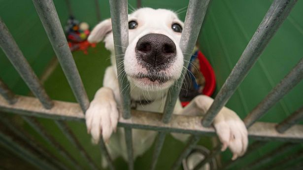

-
Nisha

Nisha was not yet born when she was rescued. That’s right! Her momma, Kaye, was rescued inside NU Campus when she was pregnant. Because of Nisha’s shy nature, she’s the only one of his siblings still at the shelter. We hope that someone out there is willing to be her dedicated best friend to help her become the friendly and playful doggo that she’s meant to be.
-
RC

RC was found living on the streets, but he may have been an owned dog that was thrown out because of his skin condition. The suspected owner denied it. All it took was some loving to transform RC into this handsome young fella! Although still very shy, he is slowly learning to trust.
-
Kurt
Kurt belongs to a litter of 5 puppies called the “Jopay pups.” They were found wandering near the Armstrong Village area during the lockdown in 2021. He is friendly and energetic so he needs lots of playtime and exercise.
-
Zarah

When Zarah, a hit and run victim, was found underneath a parked car, our volunteer rescuers were unsure if she would make it. After being treated for her injuries, our shelter vet was unsure if she would walk again. Zarah put all our uncertainties to rest by bouncing back and being one of the friendliest dogs at the shelter. We’re sure that she’ll make the best canine companion ever!
-
Lovely

There’s only one thing keeping this young, beautiful girl from being adopted, and that is her shy and skittish nature. She was rescued with her littermates as newborn puppies, and they have all been adopted. We are certain that being in a home with loving humans will help boost Lovely’s confidence. We hope that she doesn’t have to wait long!
-
Eana

Eana was seen wandering around SM Dasmarinas with an electrical wire wound tightly around her neck. It wasn’t obvious at the time of rescue but she was also pregnant and gave birth immediately after being rescued. She is a very calm and gentle dog who gets along with everyone.